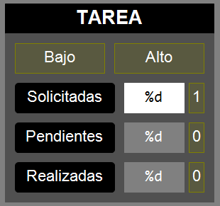

Esta sección describe un enfoque modular para
estructurar proyectos de automatización en TwinCAT 3 utilizando Lenguaje
Estructurado (ST) y Diagrama de Flujo Secuencial (SFC), que sigue parcialmente
la guía GEMMA (Guide d'Etude des Modes de Marche et
d'Arrêt) para la gestión de los modos de funcionamiento y parada
de la máquina.
La guía GEMMA es una herramienta
metodológica que permite analizar los modos de funcionamiento de un sistemas de
automatización.
EL GDMMA (Gráfico Descriptivo de
los Modos de Marcha y Parada) resulta de aplicar la guía GEMMA a un sistema
concreto. El GDMMA resultante es una máquina de estados que describe el
funcionamiento general de un sistemas de automatización.
En el ejemplo de la estación FMS203,
específicamente, se han implementado los modos GEMMA: A1,
A2, A6 (Parada), F1, F2,
F3, F4 (Funcionamiento) y D1
(Defecto/Emergencia).
Beneficios del uso de la guía GEMMA:
Estandarización y Lenguaje
Común: La guía GEMMA proporciona un marco estandarizado
y reconocido para los modos de marcha y paro. Esto significa que
diferentes ingenieros, técnicos de mantenimiento y operadores pueden
entender rápidamente el comportamiento de la máquina, incluso si no
participaron en su diseño original.
Claridad en la Operación y
Mantenimiento: Define explícitamente estados como
"Parada en estado inicial" (A1),
"Producción normal" (F1), "Parada de
emergencia" (D1), etc. Estos estados son
intuitivos para los operadores y facilitan la capacitación. Para
mantenimiento, saber que la máquina está en un modo específico (ej.
"Verificación sin orden" - F4) ayuda a
diagnosticar problemas.
Integración de la Seguridad
desde el Diseño: Los modos de defecto (D)
y parada (A) están intrínsecamente ligados a la
seguridad. El modo D1 (Emergencia) es un pilar. La guía
fuerza a pensar en cómo la máquina debe comportarse en situaciones
anómalas y cómo volver a un estado seguro (A6 - Puesta
en estado inicial).
Gestión Completa del Ciclo de
Vida de la Operación: La guía GEMMA no solo define los
estados de producción, sino también los de preparación
(F2), finalización (F3), y los diferentes
tipos de paradas (A1, A2,
A4). Esto cubre todo el espectro de cómo una máquina
opera, desde el arranque hasta la parada completa.
Facilita el Diseño de la
Interfaz Hombre-Máquina (HMI): Los modos GEMMA pueden
mapearse directamente a la HMI, proporcionando al operador una
visión clara y coherente del estado de la máquina y de las acciones
permitidas en cada modo.
Mejora la Modularidad y
Reutilización del Código: Al definir claramente las
responsabilidades de cada modo, se fomenta un diseño de software
más modular. Las lógicas específicas de cada modo (ej. la
secuencia de producción en F1, la secuencia de reinicio
en A6) pueden encapsularse en bloques de función
separados.
Análisis y Especificación
Funcional más Rigurosos: El uso del diagrama GEMMA en
la fase de diseño obliga a un análisis exhaustivo de todos los
posibles modos de operación y las transiciones entre ellos. Esto
ayuda a identificar omisiones o comportamientos no deseados antes de
la implementación.
Objetivos
Crear un proyecto de automatización para el
funcionamiento completo de la estación.
Incorporar, al modelo estructurado de
implementación, bloques funcionales que gestionen los distintos modos los modos
de marcha y parada (GDMMA) obtenida al aplicar a nuestro sistema la guía
GEMMA.
Incoporar un FB encargado de establecer el modo de
funcionamiento de la estación según evolucionen las condiciones en las que se
encuentre.
Requisitos
El programa debe mantener todas
las funcionalidades del nivel anterior (Estructurado)
El programa debe incluir:
Un pograma MAIN en
ST
Un FB Estación en
ST
[NUEVO]Un FB Director en ST que se
encarga de gestionar los modos de marcha y parada. Implementa una
máquina de estados.
Un FB Coordinador en
SFC que se encarga de coordinar el funcionamiento de
las Tareas.
Un conjunto de FBs para las
Tareas implementados en SFC
[NUEVO]Un conjunto de FBs para las secuencias de
GDMMA en SCF: Preparar,
Finalizar y Restaurar,
Una Visualización.
El programa debe permitir conmutar
entre modo manual (se puede actuar sobre la estación desde la
visualización) y modo automático (el programa produce) mediante
el conmutador del Panel del Operador en el frente de la
estación.
El programa debe considerar las
Condiciones Iniciales (CI) y la Condición de
Marcha (CM) antes de permitir que la estación comience a
producir.
Las CI engloba a todas
aquellas señales que deberían estar activas (o inactivas) en la
estación para considerar que cumple con todos los requisitos de
seguridad y operatividad necesarios para empezar a producir.
Son de especial relevancia aquellas señales que determinan
la posición de los actuadores biestables.
CondicionesIniciales := ManipuladorArriba AND EstacionConectada;
La CM indica aquellas
condiciones que debe cumplirse para que la estación comience a
producir (una vez satisfechas las CI).
CondicionMarcha := (UnidadesSolicitadas>0);
Cada grupo deberá identificar las
CI y la CM particular para su
estación.
La visualización debe mostrar el valor de las
siguientes variables de la tarea:Panel de la tarea
UnidadesSolicitadas:
Variable que contiene el número de piezas que se quieren producir en
un lote. Debe poder ser editada desde la visualización.
El programa debe ser
capaz de, tras pulsar el Pulsador de Marcha,
producir el número de piezas especificado en esta variable. Esto se
denomina Producción por Lotes.
UnidadesPendientes:
Contador que toma inicialmente el valor de
UnidadesSolicitadas y se decrementa cada vez que se
produce una pieza. Se reinicia cada vez que se acaba el lote.
UnidadesRealizadas:
Contador que empieza en cero y se incrementa cada vez que se produce
una pieza. No se reinicia cada vez que acaba el lote.
UnidadesRechazadas: (si
aplica). Contador que empieza en cero y se incrementa cada vez que
se rechaza una pieza. No se reinicia cada vez que acaba el lote.
Selección de las piezas a producir (si
aplica, ejemplo: rodamiento alto o bajo).
La visualización debe incluir, en su parte
inferior, una serie de indicadores y botones que permiten conocer el
estado de las condiciones de la estación y modificar su comportamiento:
CI: Indicador que muestra
si se cumplen o no las condiciones iniciales.
CM: Indicador que muestra
si se cumple o no la condición de marcha.
Ciclo [toggle]: Botón que indica que la
estación debe operar Ciclo a Ciclo, esto es, debe
parar entre cada iteración del lote hasta que se pulse el
Pulsador de Marcha. Debe seguir produciendo el
número de piezas que se especificó para el lote.
Pause [toggle]: Botón que pausa la
estación en su estado actual. Relacionado con SFCPause.
Reset [tap]: Botón que reinicia la
estación y la devuelve a su estado inicial. Relacionado con
SFCReset.
La visualización debe permitir, en la sección
PARÁMETROS, introducir los valores de los tiempos
utilizados en todos los FBs del programa, con el formato de las
variables de tipo TIME
[NUEVO]
La visualización debe mostrar en algún lugar, la
etiqueta del modo actual y una descripción breve del mismo.
Duración estimada: 2-3 sesiones
GDMMA
Se recomiendo realizar el diagrama GDMMA de la
estación a automatizar.
Este diagrama representa todos los modos implementados y las
condiciones de transición entre los mismos. De esta manera, de un solo vistazo, seremos
capaces de determinar qué debe ocurrir en un modo determinado para transicionar a otro.
A modo de ejemplo, puedes encontrar un diagrama GDMMA para la
estación FMS203 en el Campus Virtual:
Automatización → Ejemplos → FMS203 → Especificación → 3_FMS-203_GEMMA_GDMMA_V2.pdf
Si se incorporan nuevos modos o nuevas condiciones de
transición entre modos, es recomendable añadirlos al diagrama GDMMA.
Jerarquía del Proyecto
Estructurado + GEMMA
MAIN (Programa Principal):
Es el punto de entrada.
Su única responsabilidad es declarar una variable de
tipo FB_Estacion e instanciarla.
FB_Estacion (FB principal):
Actúa como el centro neurálgico de la estación.
Declara todas las variables de
Entrada/Salida (E/S) físicas (AT %I*, AT %Q*).
Instancia todos los FBs necesarios:
el FB_Coordinador_SFC, el FB_Director_ST y todos los FBs
de tareas (FB_SituarPale_SFC, FB_CargarBase_SFC, etc.), al
igual que en el nivel estructurado.
[NUEVO]Instancia también los FBs relacionados con la guía GEMMA:
FB_Director_ST, FB_Preparar_SFC,
FB_Finalizar_SFC y FB_Restaurar_SFC.
Conecta las E/S físicas a las variables de interfaz
(entradas y salidas) de los FBs de tareas.
Gestiona el paso de señales de control y sincronización
entre el director, el coordinador y los FBs de tareas y secuencias.
Gestiona parámetros globales de la estación (tiempos,
modos, etc.), incluyendo el número de unidades a producir.
[NUEVO]
FB_Director_ST (Implementa
el diagrama GDMMA):
Gestor de los modos de marcha y parada.
FB_Coordinador_SFC (FB Coordinador):
Orquesta la secuencia general de operación.
Define el flujo principal del proceso mediante un SFC.
Activa los FBs de tareas en el orden correcto usando
sus señales Execute.
Espera la finalización de cada tarea monitorizando sus
señales Done.
FB*_xxx_SFC (FBs de Tareas)
(ej. FB_CargarBase_SFC):
Las Tareas implementadas son las mismas que en el modo
anterior (Estructurado).
Implementan la lógica secuencial detallada para una
operación específica.
Contienen un SFC que describe los pasos
para completar su tarea.
Reciben una señal Execute para iniciar su
secuencia.
Señalan su finalización con una
señal Done.
Utilizan un patrón de
handshakeReady/Execute y Done/Ack para
sincronizarse con el coordinador.
Leen sensores y activan actuadores necesarios para su
tarea (a través de variables conectadas en FB_Estacion).
[NUEVO]
Secuencias de GDMMA
FB_EstacionRestaurar_SFC: Secuencia de
recuperación de las condiciones iniciales de la estación.
FB_EstacionPreparar_SFC: Secuencia de
preparación de la producción normal.
FB_EstacionFinalizar_SFC: Secuencia de
finalización de la producción normal.
FB_Clock: Generador de onda cuadrada.
Se utiliza para conseguir una señal binaria que alterna
su valor a lo largo del tiempo, a una frecuencia determinada.
Podemos utilizar su salida para conseguir que una
lámpara parpadee o que un avisador suene intermitentemente.
CLK: FB_Clock;
-------------------------------------------------------
LamparaMarcha := CondicionInicial AND CLK.Q;
CLK();
Estructura Estándar
de un FB de Tarea en SFC
NOTA: La estructura es idéntica a la realizada
en el nivel Estructurado.
Tanto el FB Coordinador como los FBs de tareas
(FB_CargarBase_SFC, FB_SituarPale_SFC, etc.) siguen una
estructura SFC común diseñada para la sincronización:Estructura genérica de un FB
Paso Initial:
Es el estado de reposo del FB.
Se activa la salida Ready para indicar
al coordinador que el FB está listo para recibir una orden.
La primera transición espera la señal de
entrada Execute (que será activada por el coordinador).
Pasos Intermedios
(S1, S2,
...):
Implementan la lógica de control secuencial de la
tarea.
Activan/desactivan las salidas necesarias
(actuadores) mediante acciones memorizadas o no memorizadas.
Las transiciones entre pasos esperan condiciones de
proceso (sensores, temporizadores, o Done de otros FBs en el caso del
FB_Coordinador_SFC).
Paso End:
Es el estado final de la secuencia de la tarea.
Se activa la salida Done para indicar al
coordinador que la tarea ha finalizado.
La última transición espera la señal de
entrada Ack (acuse de recibo del coordinador). Esta señal normalmente
se gestiona en el nivel superior (FB_Estacion) poniéndola
a TRUE cuando Execute es FALSE. Esto asegura
que el FB de tarea vuelve a Initial sólo después de que el coordinador
haya visto la señal Done y haya retirado la orden Execute.
Así, el coordinador espera a Done=TRUE, procesa la finalización, y
luego (implícita o explícitamente) permite
que Ack sea TRUE (generalmente asegurando
que Execute sea FALSE) para que el FB de tarea vuelva
a Initial y ponga Ready=TRUE de nuevo.
Acceso a señales de
hardware
NOTA: El acceso al hardware es
idéntico al realizado en el nivel Estructurado.
IMPORTANTE: Nótese que todas las variables de
acceso al hardware están declaradas en FB_Estacion. Con esto
conseguimos compartir el acceso a determinados sensores o actuadores desde distintos bloques
funcionales.
Un punto clave es cómo un FB de tarea (ej. FB_CargarBase_SFC)
controla un actuador (ej. ManipuladorSucciona AT %Q*) si la declaración
física está en FB_Estacion. La conexión se realiza
en FB_Estacion:
Declaración
Física:FB_Estacion declara la variable física
utilizando la especificación AT %Q*:
// En FB_Estacion
VAR
ManipuladorSucciona AT %Q*: BOOL;
END_VAR
Instanciación del FB de
Tarea:FB_Estacion instancia el FB:
// En FB_Estacion
VAR
CargarBase: FB_CargarBase_SFC;
END_VAR
Declaración de Interfaz en
Tarea:FB_CargarBase_SFC declara una salida lógica con
el mismo propósito (nótese que esto es solo una variable booleana, sin
acceso directo al hardware ya que no está declarada con
AT %Q*):
// En FB_CargarBase_SFC
VAR_OUTPUT
ManipuladorSucciona: BOOL;
END_VAR
IMPORTANTE: Nótese que
debemos declarar esta variable en VAR_OUTPUT ya que
queremos que el valor que tome dentro de FB_CargarBase_SFC
sea visible desde fuera del FB.
Conexión
en FB_Estacion: En
la implementación ST de FB_Estacion, se conectan ambas:
// En la implementación ST de FB_Estacion
ManipuladorSucciona := CargarBase.ManipuladorSucciona;
En este código, la variable
ManipuladorSucciona de la izquierda pertenece a
FB_Estacion y tiene acceso al actuador, mientras que la de la
derecha es simplemente una señal booleana que se activa por el FB de la tarea en
cuestión.
De esta forma,
cuando FB_CargarBase_SFC pone su salida
ManipuladorSucciona a TRUE, este valor se propaga a la
variable ManipuladorSucciona de FB_Estacion, que está
directamente mapeada a la salida física %Q*.
El proceso es análogo para las entradas (sensores):
Declaración física
en FB_Estacion (VAR ... AT %I*).
Instancia del FB de tarea
en FB_Estacion.
Declaración de interfaz en el FB de tarea
(VAR_INPUT).
IMPORTANTE: Nótese que
hay que declarar esta variable en VAR_INPUT ya que queremos
obtener el valor del sensor proporcionado por FB_Estacion,
que debe introducirlo desde fuera de FB_CargarBase_SFC.
Conexión en FB_Estacion pasando la
entrada física a la entrada del FB de tarea:
// En FB_CargarBase_SFC
VAR_INPUT
ManipuladorVacio: BOOL;
END_VAR
// En FB_Estacion
VAR
ManipuladorVacio AT %I*: BOOL;
END_VAR
// En la implementación ST de FB_Estacion
CargarBase(
// ...
ManipuladorVacio := ManipuladorVacio
// ...
);
En este código, la variable
ManipuladorVacio de la izquierda pertenece al
FB_CargarBase_SFC mientras que la de la derecha es la que
tiene acceso al hardware y pertenece a
FB_Estacion. Estamos pasando la información del sensor
ManipuladorVacio al FB de la tarea.
Gestión
de SFCReset y SFCPause
NOTA: Estas señales funcionan de igual manera
al nivel Estructurado.
Estas son entradas estándar proporcionadas por
TwinCAT para FBs basados en SFC. Permiten un control externo sobre la ejecución del gráfico
SFC.
SFCPause (BOOL):
Si se pone a TRUE, el
SFC congela su estado actual.
Los temporizadores de los pasos activos
(S1.t,S2.t, etc.) dejan de contar.
Las acciones
activas continúan ejecutándose.
Las transiciones no se evalúan. El
SFC no avanzará a pasos siguientes.
Cuando SFCPause vuelve
a FALSE, el SFC reanuda la ejecución desde donde se quedó (los
temporizadores continúan, las transiciones se evalúan).
En el ejemplo, FB_Estacion recibe una
señal PausaEstado y la pasa a la entrada SFCPause de
todos los FBs SFC relevantes (Coordinador, SituarPale,
etc.), siempre que no esté
activo ReiniciaEstado.
SFCReset (BOOL):
Si se pone a TRUE, el
SFC fuerza el retorno al paso inicial (Initial).
Todas las acciones se desactivan (como si se
saliera de los pasos activos).
Las variables internas del SFC
(como S1.x o S1.t) se reinician.
El SFC permanecerá en el
paso Initial mientras SFCReset esté
a TRUE.
Normalmente, SFCReset se activa con un
pulso (tap) o se mantiene activo durante la condición de reinicio.
En el
ejemplo, FB_Estacion recibe ReiniciaEstado y lo pasa a
la entrada SFCReset de todos los FBs SFC.
En nuestra implementación PauseEstado y
ReiniciaEstado están controlados por dos botones situados abajo a la derecha en
la visualización.
Implementación Típica:
Como se ve en FB_Estacion, estas
señales (PausaEstado, ReiniciaEstado) suelen venir de
la lógica de control general de la máquina (HMI, pulsadores de control) y se
distribuyen a todos los FBs SFC que necesiten ser pausados o reiniciados
conjuntamente.
// En la implementación ST de FB_Estacion (ejemplo simplificado)
Coordinador(
SFCPause := NOT ReiniciaEstado AND PausaEstado,
SFCReset := ReiniciaEstado,
// ...
);
SituarPale(
SFCPause := NOT ReiniciaEstado AND PausaEstado,
SFCReset := ReiniciaEstado,
// ...
);
// ... y así para todos los demás FBs SFC
Guía de resolución
Crear un nuevo TwinCAT Project, con nombre:
XXX_TC3_GYY donde XXX es el grado (AIE,
AIM, SR, etc.) y GYY es el número de grupo
(G01, G02, etc.)
Crear un PLC Project, con nombre:
FMSXXX_GEMMA donde XXX es el número de la estación
(201, 202, etc.).
[NUEVO] Importa
el tipo de dato E_GEMMA que se proporciona en el ejemplo del CV.
Crear un bloque funcional para el Coordinador
Nombre: FB_Coordinador_SFC
Lenguaje: SFC
Variables:
Declara como salida
variables BOOL para activar los
Execute de cada FB de Tarea. Dale nombres significativos
(SituaPale, CargaBase, etc.).
Declara como entrada
variables BOOL para recibir los Done
de cada FB de Tarea. Dale nombres significativos
(PaleSituado, BaseCargada, etc.).
Implementación:
Respeta la estructura necesaria para
hacer el handshake (Initial + Ready + Execute /
End + Done + Ack).
En este nivel, el Coordinador
se encarga de ejecutar la lógica de control correspondiente a
un ciclo de la tarea (desde traer el palé hasta transferirlo a la
siguiente estación).
El Coordinador también
se encarga de decrementar el contador de UnidadesPendientes
e incrementar UnidadesRealizadas una vez ha terminado el
ciclo.
// Código dentro de la acción con activación a la entrada en S6
IF (UnidadesPendientes > 0) THEN
UnidadesPendientes := UnidadesPendientes - 1;
END_IF
UnidadesRealizadas := UnidadesRealizadas + 1;
Crear un bloque funcional para cada Tarea
Nombre: FB_SituarPale_SFC ,
FB_CargarBase_SFC, etc.
Lenguaje: SFC
Variables:
Declara como salida
variables BOOL para activar los actuadores
necesarios para realizar la tarea. Usa los nombres de las
variables de los actuadores especificados en la tabla de E/S.
Declara como entrada
variables BOOL para recibir los valores de los
sensores necesarios para realizar la tarea. Usa los
nombres de las variables de los sensores especificados en la tabla de
E/S.
Implementación:
Respeta la estructura necesaria para
hacer el handshake (Initial + Ready + Execute /
End + Done + Ack).
Implementa la secuencia de pasos
necesaria para realizar la tarea.
[NUEVO]
Crear un bloque funcional para las Secuencias
de GDMMA
Declara como salida
variables BOOL para activar los actuadores
necesarios para realizar la tarea. Usa los nombres de las
variables de los actuadores especificados en la tabla de E/S.
Declara como entrada
variables BOOL para recibir los valores de los
sensores necesarios para realizar la tarea. Usa los
nombres de las variables de los sensores especificados en la tabla de
E/S.
Implementación:
Respeta la estructura necesaria para
hacer el handshake (Initial + Ready + Execute /
End + Done + Ack).
Implementa la secuencia de pasos
necesaria para realizar la tarea.
Crear un bloque funcional para la Estación
Nombre: FB_Estacion
Lenguaje: ST
Variables:
Declarar las variables de la tabla de E/S
en las imágenes de E y S (AT %I* y AT %Q*).
Recuerda
que este FB
es el que tiene el control del hardware.
Declarar una variable para el
Coordinador y otra para cada uno de los FBs de
Tareas (CargarBase, etc.).
[NUEVO]
Declarar una variable para el
Director.
Declarar el resto de variables necesarias
para la lógica de control de la estación: CicloACiclo,
PausaEstado, ReiniciaEstado, etc.
Declarar las variables de tiempo a
utilizar (ej. TpoPaleEntrada).
Implementación:
Instanciar aquellos FBs que se ejecutan
tanto en modo manual como automático:
FB de generación de señal
cuadrada CLK.
FB Director.
Determinar si estamos trabajando en modo
manual (F4) o automático, usando en este nivel el valor de
la variable Modo del Director.
IF (Director.Modo <> E_GEMMA.F4) THEN
// Codigo automatico
END_IF
En modo automático
Instanciar el
FB_Coordinador_SFC, pasándole como entrada las
señales Done de las tareas (morado) y las variables
declaradas en FB_Estacion que vayan a
utilizarse en el Coordinador (naranja). Presta
especial atención a las condiciones que manejan su señal de
Execute.
Instanciar cada una de los FBs
de Tareas pasándole como entrada los
valores de los sensores necesarios para cada FB (morado) y otras
variables declaradas en FB_Estacion que vayan a
utilizarse en el FB (naranja).
Instanciar cada una de los FBs
de secuencias de GDMMA pasándole como
entrada los valores de los sensores necesarios para cada FB
(morado) y otras
variables declaradas en FB_Estacion que vayan a
utilizarse en el FB (naranja).
TODO EJEMPLO PREPARAR
PrepararEstacion(
SFCPause := NOT ReiniciaEstado AND PausaEstado,
SFCReset := ReiniciaEstado,
Ack := NOT Coordinador.SituaPale,
Execute := /* */,
TpoPaleEntrada := TpoPaleEntrada,
PresenciaPale := PresenciaPale,
CodigoPaleBit0 := CodigoPaleBit0,
CodigoPaleBit1 := CodigoPaleBit1,
CodigoPaleBit2 := CodigoPaleBit2
);
Capturar las señales de salida
de los FBs de Tareas y secuencias GDMMA y
asignarlos a las señales de salida que controlan el
hardware.
Capturar también el valor de
CodigoPale.
// Acciones
LamparaAlarma := Coordinador.LamparaAlarma;
LamparaMarcha := Coordinador.LamparaMarcha;
CintaActiva := NOT PausaEstado
AND (SituarPale.CintaActiva OR TransferirPale.CintaActiva);
RetenedorBaja:= TransferirPale.RetenedorBaja;
ManipuladorAvanza := CargarBase.ManipuladorAdelante
OR DescargarBase.ManipuladorAdelante;
// ...
CodigoPale := SituarPale.CodigoPale;
En modo manual
Establecer el valor de
CodigoPale directamente desde los sensores (ya
que, al no ejecutarse el código de SituarPale,
éste no puede devolver su valor).
// Parametros de salida
CondicionInicial := EstacionConectada
AND ManipuladorMedio
AND IntroductorDetras
AND ExtractorDetras
AND PrensadorArriba;
CondicionMarcha := (UnidadesSolicitadas > 0);
Crear una instancia del FB_Estacion en el programa
MAIN.
VAR
// Bloques funcionales
Estacion: FB_Estacion;
END_VAR
--------------------------------------------------------
Estacion();
[NUEVO]
Crear un bloque funcional para el
FB_Director
Puedes importar el Director del
ejemplo de la estación FMS203.
Nombre: FB_Director
Lenguaje: ST
Variables:
Declara una variable llamada
Modo de tipo E_GEMMA y dale como valor inicial
el modo A6.
Define una serie de variables booleanas
que identifican en qué conjunto de procedimientos está la estación:
Defecto: Modos
D[1..3].
Funcionamiento:
Modos F[1..6].
Parada: Modos
A[1..7].
Producción: Modos
A2, A3, F1,
F2, F3, F5,
F6, D3
VAR_INPUT
// Señales de transición entre modos
END_VAR
VAR_OUTPUT
Modo: E_GEMMA := E_GEMMA.A6;
Defecto: BOOL; // Procedimientos de defecto
Funcionamiento: BOOL; // Procedimientos de funcionamiento
Parada: BOOL; // Procedimientos de parada
Produccion: BOOL; // Procedimientos que proporcionan valor añadido
END_VAR
Implementación:
Implementar la función de
estado especificada en el diagrama GDMMA, donde se
establecen los modos de funcionamiento y las condiciones de transición
entre distintos modos.
Crear un bloque funcional para el FB_Coordinador_SFC
Nombre: FB_Coordinador_SFC
Lenguaje: SFC
Variables:
Declara como salida
variables BOOL para activar los
Execute de cada FB de Tarea. Dale nombres significativos
(SituaPale, CargaBase, etc.).
Declara como entrada
variables BOOL para recibir los Done
de cada FB de Tarea. Dale nombres significativos
(PaleSituado, BaseCargada, etc.).
Implementación:
Respeta la estructura necesaria para
hacer el handshake (Initial + Ready + Execute /
End + Done + Ack).
Implementa la secuencia de pasos a alto
nivel del funcionamiento total de la estación. Es el equivalente al FB
monolítico del nivel anterior, pero con pasos de alto nivel.
Crear un bloque funcional para cada tarea: FB_SituarPale_SFC,
FB_CargarBase_SFC
Nombre: FB_SituarPale_SFC ,
FB_CargarBase_SFC, etc.
Lenguaje: SFC
Variables:
Declara como salida
variables BOOL para activar los actuadores
necesarios para realizar la tarea. Usa los nombres de las
variables de los actuadores especificados en la tabla de E/S.
Declara como entrada
variables BOOL para recibir los valores de los
sensores necesarios para realizar la tarea. Usa los
nombres de las variables de los sensores especificados en la tabla de
E/S.
Implementación:
Respeta la estructura necesaria para
hacer el handshake (Initial + Ready + Execute /
End + Done + Ack).
Implementa la secuencia de pasos
necesaria para realizar la tarea.
Crear un bloque funcional para la estación.
Nombre: FB_Estacion
Lenguaje: ST
Variables:
Declarar las variables de la tabla de E/S
en las imágenes de E y S (AT %I* y AT %Q*).
Recuerda: la estación tiene el control del
hardware.
Declarar una variable para el Coordinador
y otra para cada uno de los FBs de Tareas (CargarBase, etc.).
Implementación:
Determinar si estamos trabajando en modo
manual o automático, usando la variable asociada al selector de modo.
IF NOT SelectorManual THEN
// Codigo automatico
END_IF
En modo automático
Instanciar el
FB_Coordinador_SFC, pasándole como entrada las
señales Done de las tareas (morado) y otras
variables declaradas en FB_Estacion que vayan a
utilizarse en el coordinador (naranja). Presta especial
atención a las condiciones de que manejan su
Execute.
Instanciar cada una de los FBs
de Tareas pasándole como entrada los valores de los sensores
necesarios para cada FB (morado) y otras variables
declaradas en FB_Estacion que vayan a
utilizarse en el FB (naranja).
Captura las señales de salida
de los FBs de Tareas y asígnalos a las señales de salida que
controlan el hardware. Fíjate que de esta manera
podemos compartir hardware entre distintos FBs. Por
ejemplo, la cinta se va a activar cuando lo demande el FB de
SituarPale o el FB de
TransferirPale (y no estemos en pausa). Captura
también el valor de CodigoPale.
LamparaAlarma := Coordinador.LamparaAlarma;
LamparaMarcha := Coordinador.LamparaMarcha;
CintaActiva := NOT PausaEstado
AND (SituarPale.CintaActiva OR TransferirPale.CintaActiva);
RetenedorBaja:= TransferirPale.RetenedorBaja;
ManipuladorAvanza := CargarBase.ManipuladorAdelante
OR DescargarBase.ManipuladorAdelante;
// ...
CodigoPale := SituarPale.CodigoPale;
En modo manual
Establece el valor de
CodigoPale directamente desde los sensores (ya
que, al no ejecutarse el código de SituarPale,
éste no puede devolver su valor).
// Parametros de salida
CondicionInicial := EstacionConectada
AND ManipuladorMedio
AND IntroductorDetras
AND ExtractorDetras
AND PrensadorArriba;
CondicionMarcha := (UnidadesSolicitadas > 0);
Crear una variable del FB_Estacion en el programa
MAIN e instáncialo.
Realizar una visualización para el programa.
Esta visualización es simular a la del nivel
anterior, pero incorpora la información relativa al modo en el que está
funcionando la estación.
Todas las señales de E/S deben estar representadas.
Decidir si los botones deben ser Tap o
Toggle.
Se añaden las variables de la tarea:
unidades solicitadas, pendientes, realizadas y rechazadas (si
aplica).
Los tiempos utilizados en los bloques funcionales
deben ser configurables en la visualización (sección PARÁMETROS).
Debe tener una barra inferior con información sobre
las condiciones iniciales, la condición de marcha, y controles para
Pausar, Reiniciar y ejecutar la tarea
Ciclo a Ciclo.
Añadir cualquier otra información que sea
interesante mostrar.
Compilar el proyecto y comprobar que no tiene errores
Si se tiene acceso a la estación
Buscar la estación en la red y conectarse
Buscar los terminales de E/S con TwinCAT3
Renombrar los terminales de E/S según la tabla
Enlazar las variables del programa con los
terminales de E/S
Activar la configuración en la estación
Descargar el programa en la estación (Log
in)
Ejecutar el programa (Start)
Probar el funcionamiento
Si no se tiene acceso a la estación
Activar la configuración en el equipo local
Descargar el programa en el equipo local (Log
in)
Ejecutar el programa (Start)
Comprobar que la visualización cambia los valores
de las variables correctas
Usar la visualización para hacer evolucionar el
programa


{kind=link}